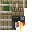
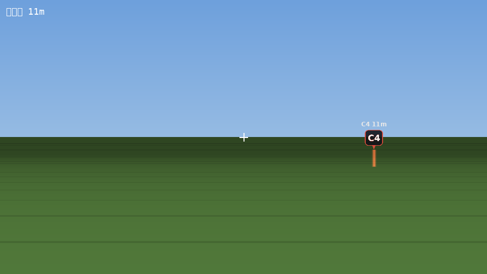
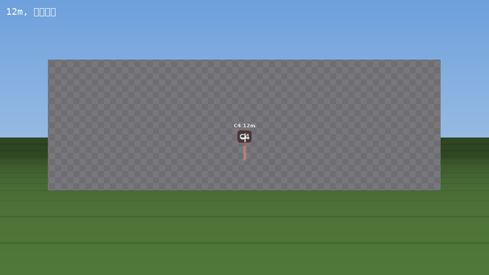
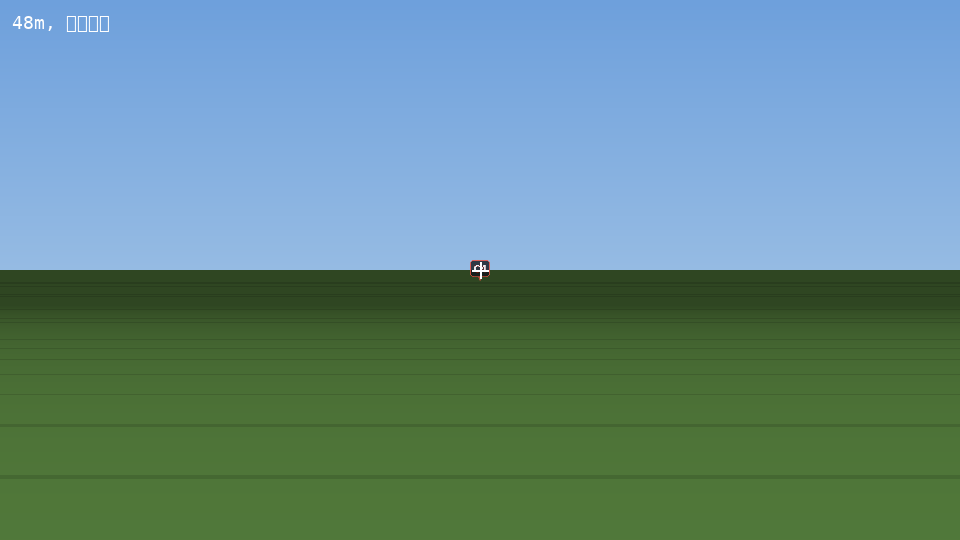

安装：把 jar 放进 mods/。客户端与服务端都要装（模组带 HUD 与自定义音效）。
需要 Minecraft 1.20.1 + Forge 47.x，无其它依赖。
SHA-256：f8aae2a7e9c2872eb07de992befc0eef9079504de0e39f9eb35d2ca54063314c
c4beep，安装播放 c4countdown（40 秒整段，音量 3.0）+ c4plant 语音，滴答用原版 block.note_block.hat（1.5），节奏恢复原版公式。allowed_install_teams（匪）只能装、allowed_defuse_teams（警）只能拆；拆除队留空时安装队依然不能拆（修掉“匪自己拆自己的包”）。/c4roles 打印名单 + 你的队伍 + 你的权限。C4 被击杀掉落 / 掉出背包 / 按 Q 扔出后，原版只剩一个 32×32 的小贴图，掉进草丛基本等于消失。
现在只要有“掉落的 C4”，就会出现一块暗色小牌 + 红框 + C4 字样的悬浮标志，
下面一道细光柱指出落点；24 格内还会在小牌上方显示一行 C4 24m 的距离。
配置：dropped_c4_marker = true（开关）、dropped_c4_marker_range = 64.0（16–512 格）。



（上图为离线成像预览：同一套参数 + 真实贴图在无 GUI 环境下的渲染，用于确认“明显但不突兀”。）
/kill 与 /c4clear 清不掉 C4 FIXED旧版 C4 不可伤害、不可摧毁，/kill 对它没用；/c4clear 又只看已加载实体，
藏在未加载区块里的 C4 清不到，玩家走近后还会复活继续倒计时。
现在：C4 会把自己的坐标记进维度存档；清场时对“坐标在、实体不在场上”的 C4 只写一条 “死亡名单”，不加载区块、不每 tick 轮询；该 C4 被加载出来的瞬间查表命中、当场自删， 一 tick 都不跑。清场开销与地图大小无关。
删除 1.7.0 另写的 HUD，改回模组自带的 ClientMessageRenderer：
所有提示与进度都在准心下方一行，不挡准心、不挡视野。
旧版用一次性 playSound（只有约 48 格内的玩家收得到），实体卸载时还会执行
stopsound @a 把所有人的倒计时音效掐断；C4 所在区块没玩家时引信还会停摆。
现在：声音由服务端逐个玩家广播（坐标取玩家自身位置，不会被距离衰减成 0）， 节奏由服务端引信驱动、随时进服都能对上，安装后给区块加 FORCED 票据，无人值守也照常滴滴。
下包瞬间，所有玩家屏幕上方显示小字“C4 已被安装”，拆除/爆炸同样有全员提示。
拆除进度改为实体同步字段，所有人都会看到“XXX 正在拆除 C4” + 进度条 + 百分比，不再只有拆除者自己能看见。
不再用方块坐标判断“是否移动”，而是按 1 格水平容差 判定：被队友/实体碰撞推一下不会中断， 真正走开才会中断。计时也从系统时钟改为服务端 tick。
| 操作 | 说明 |
|---|---|
| 安装 | 手持 C4 站在允许的方块上（默认 minecraft:end_stone_bricks），按住右键 3.5 秒 |
| 拆除 | 对准 C4，剪刀 5 秒 / 空手 10 秒，右键开始 |
| 引信 | 40 秒后爆炸，最后 20 / 10 / 4 秒有文字提醒 |
#C4 的 c4_condition : 0 空闲 / 1 已安装 / 2 已爆炸 / 3 已拆除 #C4 的 p1score/p2score/p3score : C4 坐标 X/Y/Z /c4clear : 清除场上所有 C4（权限 2）
发布包在真实 Forge 专用服务器上跑过完整自检：安装 → 记分板 → 区块票据 → 滴滴声节奏 →
爆炸 → 剪刀拆除 → 推动容差 → 双人抢拆 → NBT → 真实 tick 推进 →
/kill 与 /c4clear（含未加载区块的“死亡名单”）→ 掉落 C4 的定位与捡起。
专用服务器自检（143 项全部 PASS）：
java -Dqis4c4.selftest=true -Xmx2G @user_jvm_args.txt \
@libraries/net/minecraftforge/forge/1.20.1-47.4.16/unix_args.txt nogui
开发环境：./gradlew runServer -Dqis4c4.selftest=true